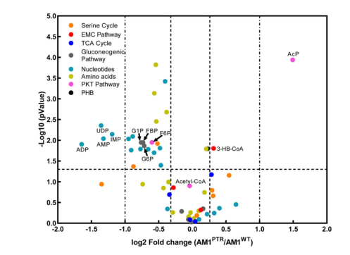

mdh encodes NAD-dependent malate dehydrogenase (EC 1.1.1.37), which catalyzes the reversible oxidation of (S)-malate (L-malate) to oxaloacetate with concomitant reduction of NAD+ to NADH. This is a critical step in the tricarboxylic acid (TCA) cycle that regenerates oxaloacetate for continued TCA cycle operation. The enzyme belongs to the LDH/MDH superfamily, specifically the MDH type 3 family. In methylotrophs, Mdh plays a crucial role in completing the TCA cycle: carbon flowing from C1 compounds through the serine cycle → glycolysis → acetyl-CoA enters the TCA cycle via citrate synthase, and Mdh regenerates oxaloacetate from malate (produced by fumarase), closing the cycle. The oxaloacetate product can then react with another molecule of acetyl-CoA to continue the TCA cycle, or can be diverted to gluconeogenesis via pckA. The enzyme is NAD-dependent (not NADP-dependent like some other MDH isoforms) and functions in the cytoplasm. The reaction is reversible, allowing Mdh to function in both the oxidative direction (malate → oxaloacetate during TCA cycle flux) and the reductive direction (oxaloacetate → malate for anaplerotic or biosynthetic purposes). Mdh is essential for both energy production through complete oxidation of acetyl-CoA and for maintaining the supply of oxaloacetate needed for continued carbon assimilation.
| GO Term | Evidence | Action | Reason |
|---|---|---|---|
|
GO:0003824
catalytic activity
|
IEA
GO_REF:0000002 |
KEEP AS NON CORE |
Summary: This is an extremely general parent term for all enzymes. While technically correct, the specific term GO:0030060 (L-malate dehydrogenase activity) provides precise functional annotation.
|
|
GO:0004459
L-lactate dehydrogenase (NAD+) activity
|
IEA
GO_REF:0000118 |
REMOVE |
Summary: This annotation is incorrect. This protein is malate dehydrogenase (EC 1.1.1.37), not lactate dehydrogenase (EC 1.1.1.27). The enzyme catalyzes the oxidation of malate to oxaloacetate, not lactate to pyruvate. This appears to be a misannotation by TreeGrafter. [file:METEA/mdh/mdh-uniprot.txt, "Malate dehydrogenase"; "(S)-malate + NAD(+) = oxaloacetate + NADH"]
|
|
GO:0006089
lactate metabolic process
|
IEA
GO_REF:0000118 |
REMOVE |
Summary: This annotation is incorrect. This enzyme metabolizes malate, not lactate. This appears to be a misannotation by TreeGrafter, likely due to the structural similarity between the LDH/MDH superfamily members. [file:METEA/mdh/mdh-uniprot.txt, "Malate dehydrogenase"; "(S)-malate + NAD(+) = oxaloacetate + NADH"]
|
|
GO:0006099
tricarboxylic acid cycle
|
IEA
GO_REF:0000120 |
ACCEPT |
Summary: Mdh catalyzes the reversible malate/oxaloacetate interconversion at the TCA cycle node. Falcon deep research notes that in canonical aerobic metabolism this enzyme functions in the citric acid cycle, while in M. extorquens AM1 grown on C1 compounds it operates at the serine-cycle/TCA interface, primarily reducing oxaloacetate. The 2024 systems-level study places mdh among coordinately regulated serine-cycle/H4F-pathway genes.
Reason: Core biological process. The UniProt/HAMAP TCA cycle assignment is corroborated by organism-specific structural and systems-level evidence in the falcon deep research, which situates Mdh at the TCA/serine-cycle interface of central carbon metabolism.
Supporting Evidence:
file:METEA/mdh/mdh-deep-research-falcon.md
in aerobic organisms MDH functions in the citric acid cycle
file:METEA/mdh/mdh-deep-research-falcon.md
Zhang et al. include mdh among serine-cycle/H4F-pathway-associated genes
|
|
GO:0016491
oxidoreductase activity
|
IEA
GO_REF:0000120 |
KEEP AS NON CORE |
Summary: This is a very general parent term for all oxidoreductases. While technically correct, the more specific term GO:0016616 provides better mechanistic annotation.
|
|
GO:0016616
oxidoreductase activity, acting on the CH-OH group of donors, NAD or NADP as acceptor
|
IEA
GO_REF:0000002 |
ACCEPT |
Summary: This accurately describes the enzymatic mechanism - Mdh is an oxidoreductase that acts on the CH-OH group of malate, using NAD+ as the electron acceptor. [file:METEA/mdh/mdh-uniprot.txt, "(S)-malate + NAD(+) = oxaloacetate + NADH"]. Falcon deep research confirms NAD(H) (not NADP) dependence from direct structural and assay evidence on the AM1 enzyme.
Reason: Accurate mechanistic parent term. The NAD-dependence underlying this term is directly supported by the AM1-specific crystallographic and kinetic study summarized in the falcon deep research (NAD+ bound in the structure; NADH used as reductant).
Supporting Evidence:
file:METEA/mdh/mdh-deep-research-falcon.md
The target protein is the NAD(H)-dependent malate dehydrogenase of *Methylorubrum extorquens* AM1
|
|
GO:0019752
carboxylic acid metabolic process
|
IEA
GO_REF:0000002 |
KEEP AS NON CORE |
Summary: This is a very general parent term that is correct but not informative. Malate is a carboxylic acid, but more specific terms about TCA cycle would be more useful.
|
|
GO:0030060
L-malate dehydrogenase (NAD+) activity
|
IEA
GO_REF:0000120 |
ACCEPT |
Summary: This is the primary and specific catalytic activity of Mdh - the NAD-dependent reversible interconversion of (S)-malate and oxaloacetate. [file:METEA/mdh/mdh-uniprot.txt, "Malate dehydrogenase"; "(S)-malate + NAD(+) = oxaloacetate + NADH + H(+)"]. Falcon deep research provides direct AM1-specific support: a high-resolution crystal structure with bound ligands and kinetic measurements for oxaloacetate reduction, confirming NAD(H) dependence and the LDH/MDH superfamily Rossmann-fold architecture.
Reason: Core molecular function. Directly confirmed for the AM1 protein (Q84FY8) by the Gonzalez 2018 structure/kinetics study summarized in the falcon deep research, which reports the oxaloacetate-reduction reaction, NAD(H) cofactor usage, and LDH/MDH-superfamily fold.
Supporting Evidence:
file:METEA/mdh/mdh-deep-research-falcon.md
reversibly catalyzes the reduction of oxaloacetate to (2S)-malate using NADH as a reductant
file:METEA/mdh/mdh-deep-research-falcon.md
Km = 36.8 ± 0.6 mM for oxaloacetate and kcat = (4.6 ± 0.1) × 10^2 s^-1
|
The research report should be a detailed narrative explaining the function, biological processes, and localization of the gene product. Citations should be given for all claims.
You should prioritize authoritative reviews and primary scientific literature when conducting research. You can supplement
this with annotations you find in gene/protein databases, but these can be outdated or inaccurate.
We are specifically interested in the primary function of the gene - for enzymes, what reaction is catalyzed, and what is the substrate specificity? For transporters, what is the substrate? For structural proteins or adapters, what is the broader structural role? For signaling molecules, what is the role in the pathway.
We are interested in where in or outside the cell the gene product carries out its function.
We are also interested in the signaling or biochemical pathways in which the gene functions. We are less interested in broad pleiotropic effects, except where these elucidate the precise role.
Include evidence where possible. We are interested in both experimental evidence as well as inference from structure, evolution, or bioinformatic analysis. Precise studies should be prioritized over high-throughput, where available.
This report concerns malate dehydrogenase (EC 1.1.1.37) encoded by mdh in Methylorubrum extorquens strain AM1 (syn. Methylobacterium extorquens AM1), UniProt accession Q84FY8 (ordered locus MexAM1_META1p1537). The strongest organism-specific evidence available here includes (i) a high-resolution structure + enzyme assay study directly on the AM1 MDH protein and (ii) a recent (2024) systems-level study in AM1-derived strains placing mdh in the serine cycle / central carbon metabolism transcriptional response. (gonzalez2018conformationalchangeson pages 1-2, gonzalez2018conformationalchangeson pages 4-5, zhang2024phosphoribosylpyrophosphatesynthetaseas pages 3-5)
| Topic | Key finding | Organism/strain | Evidence type | Source (with DOI URL + publication date) |
|---|---|---|---|---|
| Reaction/cofactor | The target protein is the NAD(H)-dependent malate dehydrogenase of Methylorubrum extorquens AM1; it reversibly catalyzes oxaloacetate reduction to (2S)-malate and assays/structures support use of the NADH/NAD+ pair rather than NADP(H). (gonzalez2018conformationalchangeson pages 1-2, gonzalez2018conformationalchangeson pages 4-5, gonzalez2018conformationalchangeson pages 2-3, gonzalez2018conformationalchangeson pages 7-7) | Methylorubrum extorquens AM1 (syn. Methylobacterium extorquens AM1) | Direct structural and enzymatic assay evidence | González JM et al. 2018, Acta Crystallographica F; DOI: https://doi.org/10.1107/S2053230X18011809; publication date: Sep 2018 |
| Kinetics | Reported enzymatic parameters for oxaloacetate reduction were Km = 36.8 ± 0.6 mM for oxaloacetate and kcat = (4.6 ± 0.1) × 10^2 s^-1 under the assay conditions described; no broader substrate-specificity panel was available in gathered evidence. (gonzalez2018conformationalchangeson pages 4-5) | Methylorubrum extorquens AM1 | Direct biochemical assay | González JM et al. 2018, Acta Crystallographica F; DOI: https://doi.org/10.1107/S2053230X18011809; publication date: Sep 2018 |
| Structure/family | The enzyme belongs to the LDH/MDH-like superfamily, with an N-terminal Rossmann-fold NAD+-binding domain; ligand-bound structures showed an open-to-closed transition on substrate binding and catalytic roles for residues including His176 and Arg83/Arg89/Arg152 in oxaloacetate recognition. (gonzalez2018conformationalchangeson pages 1-2, gonzalez2018conformationalchangeson pages 4-5, gonzalez2018conformationalchangeson pages 5-7, gonzalez2018conformationalchangeson pages 7-7) | Methylorubrum extorquens AM1 | Direct X-ray crystallography and mechanistic interpretation | González JM et al. 2018, Acta Crystallographica F; DOI: https://doi.org/10.1107/S2053230X18011809; publication date: Sep 2018 |
| Oligomerization | Purified MexMDH migrated as a ~34.7 kDa monomer on SDS-PAGE and was described as a stable ~137.4 kDa tetramer with one active site per monomer. (gonzalez2018conformationalchangeson pages 3-4, gonzalez2018conformationalchangeson pages 4-5, gonzalez2018conformationalchangeson pages 5-7) | Methylorubrum extorquens AM1 | Direct protein purification and structural analysis | González JM et al. 2018, Acta Crystallographica F; DOI: https://doi.org/10.1107/S2053230X18011809; publication date: Sep 2018 |
| Pathway context | In the gathered evidence, mdh is placed at the interface of central carbon metabolism: González et al. note that in aerobic organisms MDH functions in the citric acid cycle, whereas in M. extorquens AM1 during growth on C1 compounds it functions in the serine pathway by primarily reducing oxaloacetate; Zhang et al. include mdh among serine-cycle/H4F-pathway-associated genes in a broader map linking serine cycle, TCA cycle, and a phosphoketolase pathway. (gonzalez2018conformationalchangeson pages 1-2, zhang2024phosphoribosylpyrophosphatesynthetaseas pages 3-5, zhang2024phosphoribosylpyrophosphatesynthetaseas media 491b812f) | Methylorubrum extorquens AM1 | Direct organism-specific interpretation from structural paper; direct pathway-level multi-omics analysis | González JM et al. 2018, Acta Crystallographica F; DOI: https://doi.org/10.1107/S2053230X18011809; publication date: Sep 2018; Zhang C et al. 2024, Nature Communications; DOI: https://doi.org/10.1038/s41467-024-50342-9; publication date: Jul 2024 |
| Expression/regulation | In the evolved AM1PTR strain versus AM1WT, mdh was among genes whose expression changed together with ftfL, fch and ppc; the relevant group exhibited expression changes ranging from 2.3- to 7.1-fold, but the gathered evidence did not provide an mdh-specific fold-change. In the same comparison, malate as a serine-cycle intermediate did not change significantly. (zhang2024phosphoribosylpyrophosphatesynthetaseas pages 3-5, zhang2024phosphoribosylpyrophosphatesynthetaseas media 491b812f) | Methylorubrum extorquens AM1-derived strains (AM1PTR vs AM1WT) | Direct transcriptomics/metabolomics evidence | Zhang C et al. 2024, Nature Communications; DOI: https://doi.org/10.1038/s41467-024-50342-9; publication date: Jul 2024 |
| Localization | No direct experimental subcellular localization for Q84FY8/MexAM1_META1p1537 was found in the gathered evidence. The available studies treat it as a soluble central-metabolism enzyme, but this is inference rather than direct localization evidence. (gonzalez2018conformationalchangeson pages 1-2, zhang2024phosphoribosylpyrophosphatesynthetaseas pages 3-5) | Methylorubrum extorquens AM1 | Information not available from retrieved direct evidence | González JM et al. 2018, Acta Crystallographica F; DOI: https://doi.org/10.1107/S2053230X18011809; publication date: Sep 2018; Zhang C et al. 2024, Nature Communications; DOI: https://doi.org/10.1038/s41467-024-50342-9; publication date: Jul 2024 |
Table: This table summarizes the strongest organism-specific evidence retrieved for the functional annotation of Methylorubrum extorquens AM1 mdh (UniProt Q84FY8). It consolidates enzymatic, structural, pathway, and expression information from the key 2018 structural study and the 2024 systems-level metabolism study, while explicitly noting where evidence is unavailable.
Malate dehydrogenase (MDH) is an oxidoreductase that catalyzes the reversible interconversion of oxaloacetate (OAA) and (2S)-malate using the NADH/NAD+ redox couple. In the AM1 enzyme studied directly, MDH “reversibly catalyzes the reduction of oxaloacetate to (2S)-malate using NADH as a reductant,” and assays monitored NADH oxidation to NAD+ at 340 nm in the presence of oxaloacetate—consistent with NAD(H) dependence rather than NADP(H). (gonzalez2018conformationalchangeson pages 1-2, gonzalez2018conformationalchangeson pages 4-5, gonzalez2018conformationalchangeson pages 2-3)
In canonical aerobic metabolism, MDH is classically discussed as a TCA-cycle enzyme associated with malate oxidation. However, for M. extorquens AM1 growing on C1 substrates, the AM1 MDH has been specifically discussed as functioning in formaldehyde assimilation via the “icl-serine pathway,” and in that context it is described as primarily functioning in the reduction of oxaloacetate. (gonzalez2018conformationalchangeson pages 1-2)
Reaction (physiological direction depends on network context):
- OAA + NADH + H+ ⇌ (2S)-malate + NAD+.
The AM1 MDH is directly evidenced to use the NADH/NAD+ pair: the study describes oxaloacetate reduction using NADH as reductant and monitors NADH→NAD+ oxidation; NAD+ is observed bound in the crystal structure. (gonzalez2018conformationalchangeson pages 1-2, gonzalez2018conformationalchangeson pages 2-3, gonzalez2018conformationalchangeson pages 7-7)
A direct kinetic measurement reported for the AM1 enzyme during oxaloacetate reduction gives:
- Km (oxaloacetate) = 36.8 ± 0.6 mM
- kcat = (4.6 ± 0.1) × 10^2 s−1
These values were obtained from Michaelis–Menten fits of initial-velocity data for oxaloacetate reduction with NADH oxidation as the readout. No additional substrate panel (e.g., pyruvate/lactate) was available in the gathered evidence, so broader substrate promiscuity cannot be assessed here. (gonzalez2018conformationalchangeson pages 4-5)
The AM1 MDH belongs to the LDH/MDH-like superfamily and contains a characteristic Rossmann-fold NAD+-binding domain in the N-terminal region. Structural complexes (apo, NAD+-bound, substrate-bound) show ligand-dependent conformational changes, including an “open-to-closed” transition upon substrate binding. (gonzalez2018conformationalchangeson pages 1-2, gonzalez2018conformationalchangeson pages 4-5)
The AM1 MDH studied is reported to be a stable tetramer (~137.4 kDa), with one active site per monomer; the polypeptide runs as a ~34.7 kDa band on SDS-PAGE (consistent with monomer size). (gonzalez2018conformationalchangeson pages 3-4, gonzalez2018conformationalchangeson pages 4-5, gonzalez2018conformationalchangeson pages 5-7)
The ligand-bound structures provide mechanistic inferences about catalysis and substrate recognition. Substrate (OAA) binding is associated with active-site reorganization and salt-bridge formation by multiple arginines (Arg83/Arg89/Arg152) to OAA carboxylates, while a histidine is positioned to donate a proton during formation of (2S)-malate. This structural evidence is presented as supporting a reaction mechanism for NAD+-dependent dehydrogenases in the MDH/LDH-like superfamily. (gonzalez2018conformationalchangeson pages 1-2, gonzalez2018conformationalchangeson pages 5-7, gonzalez2018conformationalchangeson pages 7-7)
No direct experimental subcellular localization (e.g., fluorescence tagging, fractionation, signal peptide evidence) for UniProt Q84FY8 is present in the retrieved evidence. The enzyme is treated as a soluble central-metabolism enzyme operating within cytosolic pathways (serine cycle/TCA interface) in the organism-level discussions, but that is contextual inference rather than a direct localization measurement. (gonzalez2018conformationalchangeson pages 1-2, zhang2024phosphoribosylpyrophosphatesynthetaseas pages 3-5)
The AM1 MDH is explicitly discussed as participating in formaldehyde assimilation during growth on C1 compounds via the serine pathway (“icl-serine pathway”), where MDH is described as primarily functioning in oxaloacetate reduction. (gonzalez2018conformationalchangeson pages 1-2)
A 2024 Nature Communications study evolving AM1-derived strains for improved performance under low methanol reports coordinated transcriptional changes in genes annotated to the H4F-dependent formate transfer pathway and serine cycle, explicitly listing mdh among the changing genes (with ftfL, fch, ppc). The authors report that these genes “exhibited the expression changes ranging from 2.3- to 7.1-fold” between strains (AM1PTR vs AM1WT), while measured serine-cycle intermediates including malate “did not change significantly.” (zhang2024phosphoribosylpyrophosphatesynthetaseas pages 3-5)
The study also provides pathway-level visualization integrating metabolomics and transcriptomics, where mdh appears within the central metabolic map linking the serine cycle and TCA-cycle nodes in the evolved background. (zhang2024phosphoribosylpyrophosphatesynthetaseas media 491b812f, zhang2024phosphoribosylpyrophosphatesynthetaseas media 64338971)
The most directly relevant 2024 source in the retrieved library positions mdh within a coordinated central-metabolism response during adaptation of AM1-derived strains to low methanol conditions, including fold-change ranges for a gene set containing mdh and joint metabolite/transcriptome mapping onto central pathways. (Publication date: July 2024; URL: https://doi.org/10.1038/s41467-024-50342-9) (zhang2024phosphoribosylpyrophosphatesynthetaseas pages 3-5, zhang2024phosphoribosylpyrophosphatesynthetaseas media 491b812f)
Although outside the requested 2023–2024 window, the 2018 Acta Cryst F study remains a uniquely strong AM1-specific reference because it provides high-resolution structures with bound ligands plus quantitative enzyme kinetics, enabling confident functional assignment and mechanistic hypotheses for AM1 MDH. (Publication date: September 2018; URL: https://doi.org/10.1107/S2053230X18011809) (gonzalez2018conformationalchangeson pages 4-5, gonzalez2018conformationalchangeson pages 5-7)
Methylorubrum extorquens AM1 is widely used as a model methylotroph for methanol-based metabolism and strain development; the 2024 AM1 study frames methylotrophy as important for phyllosphere colonization and plant growth and maps central metabolism (including serine-cycle-associated genes such as mdh) in the context of evolved traits. (zhang2024phosphoribosylpyrophosphatesynthetaseas media 491b812f, zhang2024phosphoribosylpyrophosphatesynthetaseas media 64338971)
Within the retrieved sources, there is no direct report of industrial processes specifically engineering the mdh gene (malate dehydrogenase, EC 1.1.1.37) itself (e.g., overexpression/knockout of mdh with production phenotypes). Therefore, applications are supported here only at the level of host physiology and pathway context rather than mdh-specific implementation claims. (zhang2024phosphoribosylpyrophosphatesynthetaseas pages 3-5)
The AM1 structural/biochemical study explicitly contrasts typical aerobic-TCA-cycle framing (“primarily functions in the oxidation of malate”) with the methylotrophic assimilation context in AM1 (“primarily functions in the reduction of oxaloacetic acid”) during growth on C1 compounds. This is an organism- and condition-specific interpretation grounded in the known methylotrophic network topology and is directly stated by authors analyzing AM1 MDH. (gonzalez2018conformationalchangeson pages 1-2)
The ligand-bound structures and described residue interactions (histidine positioning for proton transfer; arginine salt-bridges to OAA) provide a mechanistic rationale for MDH activity and place the enzyme in the broader NAD+-dependent LDH/MDH-like family. (gonzalez2018conformationalchangeson pages 5-7, gonzalez2018conformationalchangeson pages 7-7)
These gaps should be addressed by targeted searches in additional AM1 genetics papers, genome-scale model validation studies, or proteomics/fractionation work; however, such sources were not retrievable within the present tool runs. (gonzalez2018conformationalchangeson pages 4-5, zhang2024phosphoribosylpyrophosphatesynthetaseas pages 3-5)
References
(gonzalez2018conformationalchangeson pages 1-2): Javier M. González, Ricardo Marti-Arbona, Julian C.-H. Chen, Brian Broom-Peltz, and Clifford J. Unkefer. Conformational changes on substrate binding revealed by structures of methylobacterium extorquens malate dehydrogenase. Acta crystallographica. Section F, Structural biology communications, 74 Pt 10:610-616, Sep 2018. URL: https://doi.org/10.1107/s2053230x18011809, doi:10.1107/s2053230x18011809. This article has 11 citations.
(gonzalez2018conformationalchangeson pages 4-5): Javier M. González, Ricardo Marti-Arbona, Julian C.-H. Chen, Brian Broom-Peltz, and Clifford J. Unkefer. Conformational changes on substrate binding revealed by structures of methylobacterium extorquens malate dehydrogenase. Acta crystallographica. Section F, Structural biology communications, 74 Pt 10:610-616, Sep 2018. URL: https://doi.org/10.1107/s2053230x18011809, doi:10.1107/s2053230x18011809. This article has 11 citations.
(zhang2024phosphoribosylpyrophosphatesynthetaseas pages 3-5): Cong Zhang, Di-Fei Zhou, Meng-Ying Wang, Ya-Zhen Song, Chong Zhang, Ming-Ming Zhang, Jing Sun, Lu Yao, Xu-Hua Mo, Zeng-Xin Ma, Xiao-Jie Yuan, Yi Shao, Hao-Ran Wang, Si-Han Dong, Kai Bao, Shu-Huan Lu, Martin Sadilek, Marina G. Kalyuzhnaya, Xin-Hui Xing, and Song Yang. Phosphoribosylpyrophosphate synthetase as a metabolic valve advances methylobacterium/methylorubrum phyllosphere colonization and plant growth. Nature Communications, Jul 2024. URL: https://doi.org/10.1038/s41467-024-50342-9, doi:10.1038/s41467-024-50342-9. This article has 30 citations and is from a highest quality peer-reviewed journal.
(gonzalez2018conformationalchangeson pages 2-3): Javier M. González, Ricardo Marti-Arbona, Julian C.-H. Chen, Brian Broom-Peltz, and Clifford J. Unkefer. Conformational changes on substrate binding revealed by structures of methylobacterium extorquens malate dehydrogenase. Acta crystallographica. Section F, Structural biology communications, 74 Pt 10:610-616, Sep 2018. URL: https://doi.org/10.1107/s2053230x18011809, doi:10.1107/s2053230x18011809. This article has 11 citations.
(gonzalez2018conformationalchangeson pages 7-7): Javier M. González, Ricardo Marti-Arbona, Julian C.-H. Chen, Brian Broom-Peltz, and Clifford J. Unkefer. Conformational changes on substrate binding revealed by structures of methylobacterium extorquens malate dehydrogenase. Acta crystallographica. Section F, Structural biology communications, 74 Pt 10:610-616, Sep 2018. URL: https://doi.org/10.1107/s2053230x18011809, doi:10.1107/s2053230x18011809. This article has 11 citations.
(gonzalez2018conformationalchangeson pages 5-7): Javier M. González, Ricardo Marti-Arbona, Julian C.-H. Chen, Brian Broom-Peltz, and Clifford J. Unkefer. Conformational changes on substrate binding revealed by structures of methylobacterium extorquens malate dehydrogenase. Acta crystallographica. Section F, Structural biology communications, 74 Pt 10:610-616, Sep 2018. URL: https://doi.org/10.1107/s2053230x18011809, doi:10.1107/s2053230x18011809. This article has 11 citations.
(gonzalez2018conformationalchangeson pages 3-4): Javier M. González, Ricardo Marti-Arbona, Julian C.-H. Chen, Brian Broom-Peltz, and Clifford J. Unkefer. Conformational changes on substrate binding revealed by structures of methylobacterium extorquens malate dehydrogenase. Acta crystallographica. Section F, Structural biology communications, 74 Pt 10:610-616, Sep 2018. URL: https://doi.org/10.1107/s2053230x18011809, doi:10.1107/s2053230x18011809. This article has 11 citations.
(zhang2024phosphoribosylpyrophosphatesynthetaseas media 491b812f): Cong Zhang, Di-Fei Zhou, Meng-Ying Wang, Ya-Zhen Song, Chong Zhang, Ming-Ming Zhang, Jing Sun, Lu Yao, Xu-Hua Mo, Zeng-Xin Ma, Xiao-Jie Yuan, Yi Shao, Hao-Ran Wang, Si-Han Dong, Kai Bao, Shu-Huan Lu, Martin Sadilek, Marina G. Kalyuzhnaya, Xin-Hui Xing, and Song Yang. Phosphoribosylpyrophosphate synthetase as a metabolic valve advances methylobacterium/methylorubrum phyllosphere colonization and plant growth. Nature Communications, Jul 2024. URL: https://doi.org/10.1038/s41467-024-50342-9, doi:10.1038/s41467-024-50342-9. This article has 30 citations and is from a highest quality peer-reviewed journal.
(zhang2024phosphoribosylpyrophosphatesynthetaseas media 64338971): Cong Zhang, Di-Fei Zhou, Meng-Ying Wang, Ya-Zhen Song, Chong Zhang, Ming-Ming Zhang, Jing Sun, Lu Yao, Xu-Hua Mo, Zeng-Xin Ma, Xiao-Jie Yuan, Yi Shao, Hao-Ran Wang, Si-Han Dong, Kai Bao, Shu-Huan Lu, Martin Sadilek, Marina G. Kalyuzhnaya, Xin-Hui Xing, and Song Yang. Phosphoribosylpyrophosphate synthetase as a metabolic valve advances methylobacterium/methylorubrum phyllosphere colonization and plant growth. Nature Communications, Jul 2024. URL: https://doi.org/10.1038/s41467-024-50342-9, doi:10.1038/s41467-024-50342-9. This article has 30 citations and is from a highest quality peer-reviewed journal.

id: Q84FY8
gene_symbol: mdh
product_type: PROTEIN
taxon:
id: NCBITaxon:272630
label: Methylorubrum extorquens AM1
description: "mdh encodes NAD-dependent malate dehydrogenase (EC 1.1.1.37), which\
\ catalyzes the reversible oxidation of (S)-malate (L-malate) to oxaloacetate with\
\ concomitant reduction of NAD+ to NADH. This is a critical step in the tricarboxylic\
\ acid (TCA) cycle that regenerates oxaloacetate for continued TCA cycle operation.\
\ The enzyme belongs to the LDH/MDH superfamily, specifically the MDH type 3 family.\
\ In methylotrophs, Mdh plays a crucial role in completing the TCA cycle: carbon\
\ flowing from C1 compounds through the serine cycle \u2192 glycolysis \u2192 acetyl-CoA\
\ enters the TCA cycle via citrate synthase, and Mdh regenerates oxaloacetate from\
\ malate (produced by fumarase), closing the cycle. The oxaloacetate product can\
\ then react with another molecule of acetyl-CoA to continue the TCA cycle, or can\
\ be diverted to gluconeogenesis via pckA. The enzyme is NAD-dependent (not NADP-dependent\
\ like some other MDH isoforms) and functions in the cytoplasm. The reaction is\
\ reversible, allowing Mdh to function in both the oxidative direction (malate \u2192\
\ oxaloacetate during TCA cycle flux) and the reductive direction (oxaloacetate\
\ \u2192 malate for anaplerotic or biosynthetic purposes). Mdh is essential for\
\ both energy production through complete oxidation of acetyl-CoA and for maintaining\
\ the supply of oxaloacetate needed for continued carbon assimilation."
existing_annotations:
- term:
id: GO:0003824
label: catalytic activity
evidence_type: IEA
original_reference_id: GO_REF:0000002
review:
summary: This is an extremely general parent term for all enzymes. While technically
correct, the specific term GO:0030060 (L-malate dehydrogenase activity) provides
precise functional annotation.
action: KEEP_AS_NON_CORE
- term:
id: GO:0004459
label: L-lactate dehydrogenase (NAD+) activity
evidence_type: IEA
original_reference_id: GO_REF:0000118
review:
summary: This annotation is incorrect. This protein is malate dehydrogenase (EC
1.1.1.37), not lactate dehydrogenase (EC 1.1.1.27). The enzyme catalyzes the
oxidation of malate to oxaloacetate, not lactate to pyruvate. This appears to
be a misannotation by TreeGrafter. [file:METEA/mdh/mdh-uniprot.txt, "Malate
dehydrogenase"; "(S)-malate + NAD(+) = oxaloacetate + NADH"]
action: REMOVE
- term:
id: GO:0006089
label: lactate metabolic process
evidence_type: IEA
original_reference_id: GO_REF:0000118
review:
summary: This annotation is incorrect. This enzyme metabolizes malate, not lactate.
This appears to be a misannotation by TreeGrafter, likely due to the structural
similarity between the LDH/MDH superfamily members. [file:METEA/mdh/mdh-uniprot.txt,
"Malate dehydrogenase"; "(S)-malate + NAD(+) = oxaloacetate + NADH"]
action: REMOVE
- term:
id: GO:0006099
label: tricarboxylic acid cycle
evidence_type: IEA
original_reference_id: GO_REF:0000120
review:
summary: Mdh catalyzes the reversible malate/oxaloacetate interconversion at the
TCA cycle node. Falcon deep research notes that in canonical aerobic metabolism
this enzyme functions in the citric acid cycle, while in M. extorquens AM1 grown
on C1 compounds it operates at the serine-cycle/TCA interface, primarily reducing
oxaloacetate. The 2024 systems-level study places mdh among coordinately regulated
serine-cycle/H4F-pathway genes.
action: ACCEPT
reason: Core biological process. The UniProt/HAMAP TCA cycle assignment is corroborated
by organism-specific structural and systems-level evidence in the falcon deep
research, which situates Mdh at the TCA/serine-cycle interface of central carbon
metabolism.
additional_reference_ids:
- file:METEA/mdh/mdh-deep-research-falcon.md
supported_by:
- reference_id: file:METEA/mdh/mdh-deep-research-falcon.md
supporting_text: in aerobic organisms MDH functions in the citric acid cycle
- reference_id: file:METEA/mdh/mdh-deep-research-falcon.md
supporting_text: Zhang et al. include mdh among serine-cycle/H4F-pathway-associated
genes
- term:
id: GO:0016491
label: oxidoreductase activity
evidence_type: IEA
original_reference_id: GO_REF:0000120
review:
summary: This is a very general parent term for all oxidoreductases. While technically
correct, the more specific term GO:0016616 provides better mechanistic annotation.
action: KEEP_AS_NON_CORE
- term:
id: GO:0016616
label: oxidoreductase activity, acting on the CH-OH group of donors, NAD or NADP
as acceptor
evidence_type: IEA
original_reference_id: GO_REF:0000002
review:
summary: This accurately describes the enzymatic mechanism - Mdh is an oxidoreductase
that acts on the CH-OH group of malate, using NAD+ as the electron acceptor.
[file:METEA/mdh/mdh-uniprot.txt, "(S)-malate + NAD(+) = oxaloacetate + NADH"].
Falcon deep research confirms NAD(H) (not NADP) dependence from direct structural
and assay evidence on the AM1 enzyme.
action: ACCEPT
reason: Accurate mechanistic parent term. The NAD-dependence underlying this term
is directly supported by the AM1-specific crystallographic and kinetic study
summarized in the falcon deep research (NAD+ bound in the structure; NADH used
as reductant).
additional_reference_ids:
- file:METEA/mdh/mdh-deep-research-falcon.md
supported_by:
- reference_id: file:METEA/mdh/mdh-deep-research-falcon.md
supporting_text: The target protein is the NAD(H)-dependent malate dehydrogenase
of *Methylorubrum extorquens* AM1
- term:
id: GO:0019752
label: carboxylic acid metabolic process
evidence_type: IEA
original_reference_id: GO_REF:0000002
review:
summary: This is a very general parent term that is correct but not informative.
Malate is a carboxylic acid, but more specific terms about TCA cycle would be
more useful.
action: KEEP_AS_NON_CORE
- term:
id: GO:0030060
label: L-malate dehydrogenase (NAD+) activity
evidence_type: IEA
original_reference_id: GO_REF:0000120
review:
summary: 'This is the primary and specific catalytic activity of Mdh - the NAD-dependent
reversible interconversion of (S)-malate and oxaloacetate. [file:METEA/mdh/mdh-uniprot.txt,
"Malate dehydrogenase"; "(S)-malate + NAD(+) = oxaloacetate + NADH + H(+)"].
Falcon deep research provides direct AM1-specific support: a high-resolution
crystal structure with bound ligands and kinetic measurements for oxaloacetate
reduction, confirming NAD(H) dependence and the LDH/MDH superfamily Rossmann-fold
architecture.'
action: ACCEPT
reason: 'Core molecular function. Directly confirmed for the AM1 protein (Q84FY8)
by the Gonzalez 2018 structure/kinetics study summarized in the falcon deep
research, which reports the oxaloacetate-reduction reaction, NAD(H) cofactor
usage, and LDH/MDH-superfamily fold.'
additional_reference_ids:
- file:METEA/mdh/mdh-deep-research-falcon.md
supported_by:
- reference_id: file:METEA/mdh/mdh-deep-research-falcon.md
supporting_text: reversibly catalyzes the reduction of oxaloacetate to (2S)-malate
using NADH as a reductant
- reference_id: file:METEA/mdh/mdh-deep-research-falcon.md
supporting_text: Km = 36.8 ± 0.6 mM for oxaloacetate and kcat = (4.6 ± 0.1) ×
10^2 s^-1
core_functions:
- description: "Mdh catalyzes the NAD-dependent reversible oxidation of (S)-malate\
\ (L-malate) to oxaloacetate with concomitant reduction of NAD+ to NADH. This\
\ is a critical step in the TCA cycle that regenerates oxaloacetate for continued\
\ cycle operation. In the context of methylotrophic metabolism, Mdh completes\
\ the TCA cycle: carbon flowing from C1 compounds through the serine cycle \u2192\
\ glycolysis \u2192 acetyl-CoA enters the TCA cycle via citrate synthase, and\
\ Mdh regenerates oxaloacetate from malate (produced by fumarase), closing the\
\ cycle. The oxaloacetate product can then react with another molecule of acetyl-CoA\
\ (via citrate synthase) to continue the TCA cycle, or can be diverted to gluconeogenesis\
\ via pckA. The enzyme belongs to the LDH/MDH superfamily (MDH type 3 family)\
\ and functions in the cytoplasm. The reaction is reversible, allowing Mdh to\
\ function in both oxidative (malate \u2192 oxaloacetate) and reductive (oxaloacetate\
\ \u2192 malate) directions depending on metabolic needs. Mdh is essential for\
\ both energy production and maintaining the supply of oxaloacetate for carbon\
\ assimilation."
molecular_function:
id: GO:0030060
label: L-malate dehydrogenase (NAD+) activity
directly_involved_in:
- id: GO:0006099
label: tricarboxylic acid cycle
supported_by:
- reference_id: file:METEA/mdh/mdh-uniprot.txt
supporting_text: Catalyzes the reversible oxidation of malate to oxaloacetate.
- reference_id: file:METEA/mdh/mdh-uniprot.txt
supporting_text: (S)-malate + NAD(+) = oxaloacetate + NADH + H(+)
- reference_id: file:METEA/mdh/mdh-deep-research-falcon.md
supporting_text: reversibly catalyzes the reduction of oxaloacetate to (2S)-malate
using NADH as a reductant
- reference_id: file:METEA/mdh/mdh-deep-research-falcon.md
supporting_text: in *M. extorquens* AM1 during growth on C1 compounds it functions
in the serine pathway by primarily reducing oxaloacetate
references:
- id: file:METEA/mdh/mdh-uniprot.txt
title: UniProt entry for mdh malate dehydrogenase
findings: []
- id: file:METEA/mdh/mdh-deep-research-falcon.md
title: 'Falcon deep research report: mdh (malate dehydrogenase, Q84FY8) in Methylorubrum
extorquens AM1'
findings:
- supporting_text: The target protein is the NAD(H)-dependent malate dehydrogenase
of *Methylorubrum extorquens* AM1
reference_section_type: OTHER
- supporting_text: reversibly catalyzes the reduction of oxaloacetate to (2S)-malate
using NADH as a reductant
reference_section_type: OTHER
- supporting_text: Km = 36.8 ± 0.6 mM for oxaloacetate and kcat = (4.6 ± 0.1) × 10^2
s^-1
reference_section_type: OTHER
- supporting_text: belongs to the **LDH/MDH-like superfamily** and contains a characteristic
**Rossmann-fold NAD+-binding domain**
reference_section_type: OTHER
- supporting_text: reported to be a stable **tetramer** (~137.4 kDa), with one active
site per monomer
reference_section_type: OTHER
- supporting_text: salt-bridge formation by multiple arginines (Arg83/Arg89/Arg152)
to OAA carboxylates
reference_section_type: OTHER
- supporting_text: a histidine is positioned to donate a proton during formation
of (2S)-malate
reference_section_type: OTHER
- supporting_text: in aerobic organisms MDH functions in the citric acid cycle
reference_section_type: OTHER
- supporting_text: in *M. extorquens* AM1 during growth on C1 compounds it functions
in the serine pathway by primarily reducing oxaloacetate
reference_section_type: OTHER
- supporting_text: Zhang et al. include mdh among serine-cycle/H4F-pathway-associated
genes
reference_section_type: OTHER
- supporting_text: exhibited the expression changes ranging from **2.3- to 7.1-fold**
reference_section_type: OTHER
- id: GO_REF:0000002
title: Gene Ontology annotation through association of InterPro records with GO
terms.
findings: []
- id: GO_REF:0000118
title: TreeGrafter-generated GO annotations
findings: []
- id: GO_REF:0000120
title: Combined Automated Annotation using Multiple IEA Methods.
findings: []
status: COMPLETE
tags:
- metea
{kind=link}